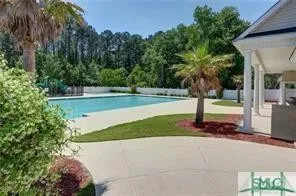

Photo pair 1


geometrically_supported
Shared-image context: No cross-listing duplicate found by the current three-hash test
Hash / geometric comparison evidence
{
"hash_hamming": {
"dhash": 1,
"phash": 2,
"center_phash": 2
},
"hash_min": 1,
"priority_policy": "obvious_v1_both_phashes_le_6_nonshared",
"exact_hash_hamming": {
"phash": 2,
"center_phash": 2
},
"orb_ransac": {
"score": 0.14069083642592062,
"detail": {
"inliers": 111,
"ratio_matches": 113,
"coverage": 0.3969043071797324,
"homography": [
[
0.36993457310842764,
0.0001189637066946692,
0.259326526062736
],
[
0.0007539447037841234,
0.3690291353312642,
0.013075755102044472
],
[
2.3443576957930053e-06,
4.95772433070045e-06,
1.0
]
]
},
"comparison_ms": 9.441741000046022,
"feature_lookup_or_extraction_ms": 60.77944800199475
}
}